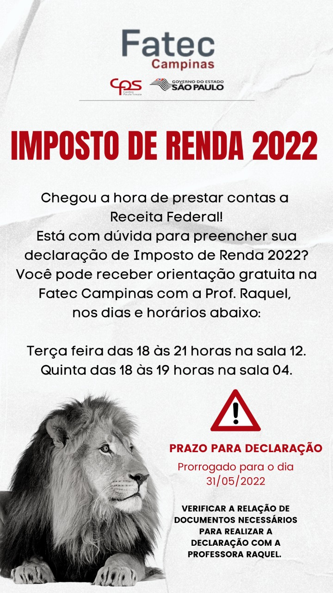

Imposto de Renda 2022



Para realização da matrícula, o candidato deverá acessar o link enviado por e-mail e inserir no sistema de Matrícula Remota a documentação necessária.
Para realização da matrícula, o candidato deverá acessar o link enviado por e-mail e inserir no sistema de Matrícula Remota a documentação necessária.
Para realização da matrícula, o candidato deverá acessar o link enviado por e-mail e inserir no sistema de Matrícula Remota a documentação necessária.
O candidato deverá acessar o link enviado por e-mail e inserir no sistema de Matrícula Remota a documentação necessária.
Para realização da matrícula, o candidato deverá acessar o link enviado por e-mail e inserir no sistema de Matrícula Remota a documentação necessária.
Informativo nº 01/2022 - Faculdade de Tecnologia de Campinas. Atenção Alunos Considerando o planejamento das atividades educacionais para 2022, em atendimento ao Plano São Paulo do Governo do Estado de São Paulo, que reflete na retomada das aulas presenciais para o 1º semestre de 2022, observadas as orientações do Ministério da Saúde e da Agência Nacional de Vigilância Sanitária, bem como as diretrizes da Secretaria de Estado da Saúde.
Edital de Abertura de Inscrições para o Curso de español - conociendo Chile na modalidade virtual, oferecido pelo DUOC_UC - Chile. O Centro Estadual de Educação Tecnológica Paula Souza (CEETEPS), por meio de sua Assessoria de Relações Internacionais (ARInter) - Assessoria Técnica da Superintendência - no uso de suas atribuições, torna público aos interessados que estão abertas as inscrições para o Curso de español - conociendo Chile na modalidade virtual, em conformidade com os dispositivos do...
Sobre
Endereço
Centro Paula Souza
Docentes
Calendário de Eventos